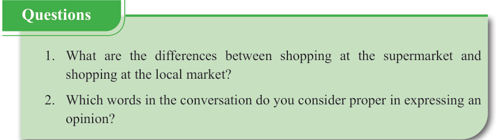

English for Secondary Schools Student’s Book Form One, printed page 63
Jontwa: Okay Libe, I respect your opinion.
Are you sending the money or not?
People are giving me looks here.
Libe: Right away.
You owe me big time I tell you.
Remember you’re just a pauper.
Ha ha ha.
Jontwa: Thank you so much Libe.
I owe you one.

Green ‘Questions’ box with two comprehension questions: ‘What are the differences between shopping at the supermarket and shopping at the local market?’ and ‘Which words in the conversation do you consider proper in expressing an opinion?’Questions
1. What are the differences between shopping at the supermarket and shopping at the local market?
2. Which words in the conversation do you consider proper in expressing an opinion?
Questions
(c)
Engage in Libe and Jontwa’s conversation by giving your opinion.
Begin with, “I think ……” or “In my opinion…..”
(d)
Read the following story aloud and answer the questions that follow.
An invisible scholar in the library
I love going to the regional library on Saturdays because there is a wide range of materials for recreational reading, learning, and personal enrichment.
Public libraries are open to everyone, so you should go there sometimes.
One fateful Saturday, I went to the library as usual, but it was unusually empty and quiet.
I sat at my favourite spot.
Suddenly, out of the corner of my eye, I saw a book moving from the shelf.
It was like someone had taken it from the shelf, and he was walking while holding it.
I rubbed my eyes in disbelief and looked in that direction again.
No one, I mean no one was holding it.